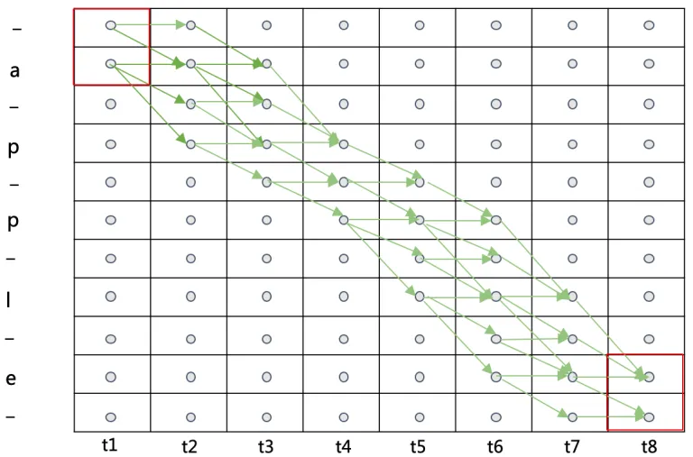

Understanding the Math Behind CTC
In this post, I’m writing down my thought process of understanding the math behind Connectionist Temporal Classification (CTC) [1][2].
This article assumes that you understand the intuition behind CTC.
Definitions
Input and Output Sequences
The input of a CTC network (an audio signal) is a sequence denoted as \(\boldsymbol{x} = \begin{bmatrix} x_1 & x_2 & \cdots & x_m \\ \end{bmatrix}\) while the target sequence (a list of phonemes) is \(\boldsymbol{z} = \begin{bmatrix} x_1 & x_2 & \cdots & x_n \\ \end{bmatrix}\).
The target sequence consists of any symbols drawn from an alphabet $L$.
Note that the length of $\boldsymbol{x}$, $T$, is larger than the length of $\boldsymbol{z}$, $U$.
Operations and Values
The output of the neural network, $\boldsymbol{y}$, is a matrix, where $y_k^t$ is the probability of observing label $k$ at time $t$. $\boldsymbol{y}$ consists of symbols drawn from another alphabet $L’$, which has one more symbol called “blank”, denoted as $\%$, than $L$.
Also, we define an operation $\mathcal{B}: L’^{T} \mapsto L^{\le T}$ that
- Merge consecutive identical symbols
- Remove the blank symbol
For example, \(\mathcal{B}(aaa\%b\%cc\%d) = abc\)
Derivation
The Goal
Assuming the output $z_1,z_2,\dots$ is conditionally independent
w.r.t the input $\boldsymbol{x}$,
we define
\(y = p(\boldsymbol{\pi}|\boldsymbol{x}) = \prod y_{\boldsymbol{\pi}_t}^{t}\)
where $\boldsymbol{\pi} =
\begin{bmatrix}
\pi_1 & \pi_2 & \cdots & \pi_n
\end{bmatrix}
$ is a possible sequence that can be mapped to $\boldsymbol{z}$ by $\mathcal{B}$.
Then, the ultimate goal of CTC is to find a sequence $\boldsymbol{l}$ that maximize the probability
\begin{equation} p(\boldsymbol{z}|\boldsymbol{x}) = \sum_{\pi\in\mathcal{B}^{-1}(\boldsymbol{z})} p(\boldsymbol{\pi}|\boldsymbol{x}) \label{eq:prob_z} \end{equation}
in an efficient way.
where $\boldsymbol{z} \in L^{\le T}$ meaning it has a length smaller than $T$.
To achieve the goal, 1) we need some way of training the model, and 2) we need to figure out how to find the best sequence when decoding
Training
To estimate $p(\boldsymbol{l}|\boldsymbol{x})$, we use a method similar to Viterbi decoding or the forward-backward algorithm. By doing this, we can calculate the forward variable and backward variable. And we express the objective function using them so that by minimizing the objective, the RNN learns to model the audio sequence.
Forward & Backward
For a sequence $\boldsymbol{q}$ with a length $r$, the first $p$ of its elements are denoted by \(\boldsymbol{q}_{1:p}\) and the last $p$ of its elements are denoted by \(\boldsymbol{q}_{r-p:r}\)
For some labeling $\boldsymbol{l}$ (a result of $\mathcal{B}$), its forward variable at time $t$ for symbols before the $s$-th symbol is
\[\alpha_t(s) = \sum_{ \begin{align*} &\pi\in N^T \\ &\mathcal{B}(\pi_{1:t}) = \boldsymbol{l}_{1:s} \\ \end{align*} } \prod_{t'=1}^t y_{\pi_{t}'}^{t'}\]This basically means that the forward variable is the sum of probabilities of all paths that can result in $\boldsymbol{l}_{1:s}$ at time $t$.
Similarly, the backward variable at time $t$ for symbols after the $s$-th symbol is defined as:
\[\beta_t(s) = \sum_{ \begin{align*} &\pi\in N^T \\ &\mathcal{B}(\pi_{t:T}) = \boldsymbol{l}_{s:|\boldsymbol{l}|} \\ \end{align*} } \prod_{t'=t}^T y_{\pi_{t}'}^{t'}\]Considering the “blank” symbol
The blank symbol makes things a little more difficult in terms of forward-backward algorithm and decoding. There are some rules regarding to whether a transition from node A to node B is possible:
- transitions between blank and non-blank labels are allowed, because transitions between blanks do not make any sense
- transitions between any pair of distinct non-blank labels are allowed, because the blank symbol is used to separate consecutive same labels
- the initial state is either a blank or the first symbol in $\boldsymbol{l}$
Also, during training, what we are actually performing the forward-backward algorithm on is a modified sequence $\boldsymbol{l}’$, which has blanks added to the beginning and the end of $\boldsymbol{l}$ and blanks inserted between every two labels.
Thus, the initialization of $\alpha$ and $\beta$ is:
\[\begin{align*} \alpha_1(1) &= y_b^1 \\ \alpha_1(2) &= y_{\boldsymbol{l}_1}^1 \\ \alpha_1(s) &= 0, \forall s > 2 \\ \beta_T(|\boldsymbol{l}'|) &= y_b^T \\ \beta_T(|\boldsymbol{l}'| - 1) &= y_{\boldsymbol{l}_{|\boldsymbol{l}|}}^T \\ \beta_T(s) &= 0, \forall s < |\boldsymbol{l}'| - 1 \\ \end{align*}\]Recursion
The major advantage of using the forward-backward algorithm is that you can calculate $\alpha$ or $\beta$ recursively, which means you can use dynamic programming to do it efficiently.
The formula for calculating $\alpha$ and $\beta$ recursively given in the paper is:
\[\begin{equation} \alpha_t(s) = \begin{cases} \bar{\alpha}_t(s)y_{\boldsymbol{l}_{s}'}^t & \boldsymbol{l}_{s}' = b \text{ or } \boldsymbol{l}_{s-2}' = \boldsymbol{l}_{s}' \\ (\bar{\alpha}_t(s) + \alpha_{t-1}(s-2)) y_{\boldsymbol{l}_{s}'}^t & \text{otherwise} \\ \end{cases} \label{eq:alpha} \end{equation}\]where \(\bar{\alpha}_t(s) = \alpha_{t-1}(s) + \alpha_{t-1}(s-1)\)
\[\begin{equation} \beta_t(s) = \begin{cases} \bar{\beta}_t(s)y_{\boldsymbol{l}_{s}'}^t & \boldsymbol{l}_{s}' = b \text{ or } \boldsymbol{l}_{s+2}' = \boldsymbol{l}_{s}' \\ (\bar{\beta}_t(s) + \beta_{t+1}(s+2)) y_{\boldsymbol{l}_{s}'}^t & \text{otherwise} \\ \end{cases} \label{eq:beta} \end{equation}\]where \(\bar{\beta}_t(s) = \beta_{t+1}(s) + \beta_{t+1}(s+1)\)
NOTE that the formula actually implies some rules of transitions in addition to the previous ones:
- …
- …
- …
- Transitions can only occur from the previous symbol to the next symbol, not the other way around
- Transitions cannot occur between two identical symbols without going through a blank in between them
- Transitions cannot skip a non-blank symbol
Here is an example of all possible paths for “apple” in the following graph I “borrowed” from this blog:

Note that the nodes in the graph without any connections have a probability of $0$, since it is impossible to reach them within $[0, T]$.
The probability of $\boldsymbol{l}$, expressed using $\alpha$, is the sum of the total probabilities of $\boldsymbol{l}’$ with and without the final blank at time $T$:
\[p(\boldsymbol{l}|\boldsymbol{x}) = \alpha_T(|\boldsymbol{l}'|) + \alpha_T(|\boldsymbol{l}'| - 1)\]Also, the probability of $\boldsymbol{l}$, expressed using $\beta$, is the sum of the total probabilities of $\boldsymbol{l}’$ with and without the first blank at time $1$:
\[p(\boldsymbol{l}|\boldsymbol{x}) = \beta_T(1) + \beta_T(2)\]Note that underflow is bound to happen in the recursive process. Therefore we should rescale the forward and backward variable in our calculation. However, I’m not covering the details here.
MLE
To train the neural network, we need to derive an objective function that is differentiable. Our objective function is simply the sum of the log of $p(\boldsymbol{z}|\boldsymbol{x})$:
\[O(S,\mathcal{N}_{\omega}) = -\sum_{(\boldsymbol{x},\boldsymbol{z})\in S} \ln(p(\boldsymbol{z}|\boldsymbol{x}))\]where $p(\boldsymbol{z}|\boldsymbol{x})$ is the posterior of $\boldsymbol{z}$, the target sequences in the training data $S$, and $\mathcal{N}_{\omega}$ is the output of the neural network.
The next step is to differentiate the objective function. For each data sample \(\{\boldsymbol{x},\boldsymbol{z}\}\) we have:
\[\frac{ \partial O(\{\boldsymbol{x},\boldsymbol{z}\}, \mathcal{N}_{\omega}) }{ \partial y_k^t } = -\frac{ \partial \ln(p(\boldsymbol{z}|\boldsymbol{x})) }{ \partial y_k^t }\]Since for a labeling $\boldsymbol{l}$ the product of the forward and backward variables at a given $s$ and $t$ is the probability of all the paths corresponding to $\boldsymbol{l}$ that go through the symbol $s$ at time $t$, we have:
\[\alpha_t(s)\beta_t(s) = \sum_{ \begin{align*} &\pi\in \mathcal{B}^{-1}(\boldsymbol{l}): \\ &\pi_t = \boldsymbol{l}_s' \\ \end{align*} } y_{\boldsymbol{l}_s'}^t \prod_{t'=1}^T y_{\pi_{t'}}^{t'}\]Since
\[p(\boldsymbol{\pi}|\boldsymbol{x}) = \prod_t y_{\boldsymbol{\pi}_t}^{t}\]we get
\[\frac{\alpha_t(s)\beta_t(s)}{y_{\boldsymbol{l}_s'}^t} = \sum_{ \begin{align*} &\pi\in \mathcal{B}^{-1}(\boldsymbol{l}): \\ &\pi_t = \boldsymbol{l}_s' \\ \end{align*} } p(\boldsymbol{\pi}|\boldsymbol{x})\]Let $\theta$ be the right hand side, then it is the sum of probability of the paths of $\boldsymbol{l}$ that went through $\boldsymbol{l}_s’$ at time $t$. Thus, \(\sum_{\pi\in\mathcal{B}^{-1}(\boldsymbol{z})} p(\boldsymbol{\pi}|\boldsymbol{x})\) in \eqref{eq:prob_z} is the sum of $\theta$ over time.
So:
\begin{equation} p(\boldsymbol{l}|\boldsymbol{x}) = \sum_{s=1}^{|\boldsymbol{l}’|} \frac{\alpha_t(s)\beta_t(s)}{y_{\boldsymbol{l}_s’}^t} \label{eq:plx} \end{equation}
To calculate the partial derivative of $p(\boldsymbol{l}|\boldsymbol{x})$ w.r.t. $y_k^t$, we only need to consider the paths that went to label $k$ at time $t$. However, since the a label in $\boldsymbol{l}$ might corresponds to multiple labels in $\boldsymbol{\pi}$, we define \(\text{lab}(\boldsymbol{l},k) = \{s: \boldsymbol{l}_s' = k\}\) as the set of positions where label $k$ occurs (note that this set can be empty).
Then the partial derivative can be calculated as:
\begin{equation} \frac{ \partial p(\boldsymbol{l}|\boldsymbol{x}) }{ \partial y_k^t } = \frac{1}{(y_k^t)^2} \sum_{s\in\text{lab}(\boldsymbol{l},k)} \alpha_t(s)\beta_t(s) \label{eq:grad_plx} \end{equation}
Let $\boldsymbol{l} = \boldsymbol{z}$, then
\[\begin{align} \frac{ \partial O(\{\boldsymbol{x},\boldsymbol{z}\}, \mathcal{N}_{\omega}) }{\partial y_k^t} &= -\frac{ \partial\ln(p(\boldsymbol{z}|\boldsymbol{x})) }{\partial y_k^t} \notag \\ &= -\frac{1}{p(\boldsymbol{z}|\boldsymbol{x})} \frac{ \partial p(\boldsymbol{z}|\boldsymbol{x}) }{\partial y_k^t} \label{eq:obj_func} \\ \end{align}\]Using \eqref{eq:alpha}, \eqref{eq:beta}, \eqref{eq:plx}, \eqref{eq:grad_plx}, and \eqref{eq:obj_func}, we can calculate the gradiant and perform back propagation.
Decoding
TODO: complete this section
Brute Force
Prefix Search
Beam Search
Bibliography
- [1]A. Graves, S. Fernández, F. Gomez, and J. Schmidhuber, “Connectionist temporal classification: labelling unsegmented sequence data with recurrent neural networks,” in Proceedings of the 23rd international conference on Machine learning - ICML ’06, Pittsburgh, Pennsylvania, 2006, pp. 369–376, doi: 10.1145/1143844.1143891.
- [2]A. Graves, Supervised sequence labelling with recurrent neural networks, no. v. 385. Heidelberg; New York: Springer, 2012.